Your agents. One tree. No worktrees.
onetree lets several coding agents (Claude Code sessions, their subagents, Codex) work at the same time in one git clone and one working tree: a private git index for each agent, claims on the files it writes, a broker that checks every commit, and your test suite as the referee.
uv tool install git+https://github.com/EliasCodeFI/onetree- Pre-release 0.0.1a0
- Python 3.11+
- Linux
- Zero runtime dependencies
- No daemon
- Apache-2.0
How onetree works
The usual way to run several coding agents on one repository is one git worktree per agent and a merge at the end. onetree is the other design: all sessions share one checkout, and the coordination a merge would do afterwards happens before the edit and at the commit.

What the animation shows
- Sessions: a private index for every agent. Each agent registers a session and gets its own git index. Staging is private; the working tree is shared. Three agent cards (Agent A, Agent B, Agent C) stand on the left. In the middle is a panel titled "One shared working tree" with five files. On the right are the commit broker and the branch main. A box labelled "index" appears inside each agent card: each session has registered and received its own private git index. Three session_register events appear in the event log at the bottom.
- Claims: exclusive write leases on paths. Before editing, a session claims the exact paths it will write. A claim is an exclusive lease on a path. Agent A claims src/api.py, Agent B claims src/auth.py and Agent C claims tests/test_api.py. An arrow runs from each agent to its file, and the file row shows "claimed by A" (or B, or C) with a badge carrying the agent's letter. Three claim events are appended to the log.
- A refusal names the holder. A claim on a held path is refused, and the refusal names the holder. A change to a path you did not claim cannot land. Agent C also asks for src/api.py, which Agent A holds. The request is refused: the row shows "C refused: held by A" and a crossed-out badge with the letter C. A refused event is appended to the log.
- Edit in the shared tree, stage privately. Agents edit their claimed files in the one working tree and stage them with ordinary git, each into its own index. Each agent edits its own file in the shared working tree; the rows change to "edited by A", "edited by B" and "edited by C". Each agent then stages its file into its own index: the index box in each agent card now names the staged file.
- Landing: every change goes through the broker. onetree land audits the claims, runs the admitted payload gate and your tests, then moves the branch ref by compare-and-swap. Agent A lands. A chip labelled "candidate A" travels from A's index to the commit broker. The broker's four steps turn green one after another: claims audit, payload gate, test referee, compare-and-swap. A new commit marked A appears on the branch main, the file row shows "landed by A", and the events land_intent and landed are appended to the log.
- A red candidate stays out. If the tests fail on the candidate, the landing is refused. The branch does not move, and the refusal is recorded. Agent B tries to land. Its candidate passes the claims audit and the payload gate, but the test referee turns red: the tests fail on the candidate. The candidate is marked refused, a crossed-out circle shows that no commit was added to main, and a refused event is appended to the log.
- One tree, one history. One clone, one working tree, one linear history. Every claim, landing and refusal is an event in an append-only log kept in git: refs/onetree/wal. Agent C lands the same way as A: four green steps, and a second new commit, marked C, on main. The final picture: three agents, one working tree, a linear branch carrying the commits of A and C, B's change still waiting in the tree, and an event log with twelve entries.
Works with Claude Code and Codex
Several Claude Code sessions or subagents on one repository, overwriting each other's files? onetree keeps them in one working tree, without a git worktree for each: every file an agent is about to edit is claimed for it first, a second agent asking for the same file is told who has it, and finished work reaches the branch only after your tests pass.
Claude Code
Install onetree, set your repository up once, and add the plugin:
onetree init --test "python -m pytest -q"/plugin marketplace add EliasCodeFI/onetree
/plugin install onetree@onetreeThe plugin claims each file before Claude edits it, refuses git checkout, reset, stash, commit and the other git commands that would erase another agent's work, gives each subagent claims of its own, and adds claim, release, claims and land tools. The land tool also works when Claude Code's shell sandbox is on.
Codex
Add the same hook to .codex/hooks.json in your repository, trust it with /hooks, and land with onetree land -a -m "<message>".
{"hooks": {"PreToolUse": [{"matcher": "^(apply_patch|Bash)$",
"hooks": [{"type": "command", "command": "onetree hook codex pre-tool-use"}]}]}}How it compares
| Approach | One working tree | Two agents, one file | Tests before the branch moves | Agents |
|---|---|---|---|---|
| A git worktree per agent | No, one checkout each | Found later, as a merge conflict | Up to you | Any |
| Lock hooks (claude-file-lock, claude-bulkhead) | Yes | Second edit refused | No | Claude Code |
| Claude Code agent teams | Yes | Not prevented: tasks are claimed, files are not | No | Claude Code |
| onetree | Yes | Second edit refused, with the holder's name | Yes, your test command | Claude Code, Codex, any command line |
Four parts, all in git
onetree is a command-line tool with no server. Its state lives in the repository's own .git directory, so your working tree stays free of extra files. The details are in docs/DESIGN.md.
Private index per agent
Every agent session stages into its own git index, so staging never collides. The working tree is shared; the staging area is not.
Claims
onetree claim gives a session the exclusive right to write a file. Asking for a file someone else holds is refused, and the refusal names the holder.
Commit broker
onetree land is the only way into the shared branch. It checks the claims, builds the commit from the session's own index, runs the payload gate you admitted, and moves the branch only if nobody moved it in the meantime.
Test referee
Before the branch moves, your test command runs on a temporary checkout of the change. If the tests fail or time out, the change is refused.
Everything onetree records goes into an append-only log on the git ref refs/onetree/wal (a write-ahead log), and every branch and log update is a compare-and-swap.
What onetree land does before a branch moves
A candidate commit passes four steps in order. Each one can refuse, and a refusal leaves the branch where it was.

What the animation shows
- A candidate is built from the private index. onetree land builds a candidate commit from the session's private index. The shared index and the working tree are not touched. A row of boxes runs from left to right: a session with its private index, four numbered steps (claims audit, payload gate, test referee, compare-and-swap) and the branch main. A rail connects them. A token marked A, the candidate commit of Agent A, appears at the session's index.
- Four steps before the branch moves. Each step can refuse. Only a candidate that passes all four moves the ref. A landing is recorded in the append-only log as an intent and a landed event. The token A moves along the rail and stops at each step. Each step turns green as the candidate passes it: the claims audit, the payload gate, the test referee (shown working for a moment before it turns green) and the compare-and-swap. The token then moves onto the branch main and becomes a new commit marked A.
- One unclaimed path refuses it all. If one changed path was not claimed by this session, the whole candidate is refused. Nothing reaches the branch. A token marked B starts from the index. The index now lists a second file, src/db.py, marked "not claimed". The token stops at the first step, the claims audit, which turns red and shows the reason unclaimed_paths. The token is crossed out and disappears. The branch main is unchanged.
- A race has exactly one winner. When two landings race, the compare-and-swap lets exactly one move the ref. The other is rebuilt on the new head and goes through the steps again. Two tokens, C and B, travel through the first three steps one behind the other. At the compare-and-swap, C arrives first and becomes a new commit on main. For B the step turns amber: the head has moved. B travels back along a dashed return line labelled "moved head: rebuilt on the new head, tried again", passes all four steps again and becomes the next commit on main, after C.
- What reaches the branch. Every commit on the branch is the exact candidate that was audited, gated and tested. A refused candidate leaves the branch where it was. The final picture: all four steps are green and the branch main carries three new commits in the order A, C, B, after the commit it started with.
Install
onetree is pre-release and is not on PyPI, so install it from its repository. pip install onetree does not install this project.
You need
- Linux (Windows is not supported: the landing path needs POSIX process groups)
- Python 3.11 or newer
- Git
There are no other dependencies.
Check the installation
$ onetree status
onetree 0.0.1a0 (phase: gate-3-dogfood)With uv
uv tool install git+https://github.com/EliasCodeFI/onetreeWith pipx
pipx install git+https://github.com/EliasCodeFI/onetreeWith pip, inside a virtual environment
python3 -m venv .venv && . .venv/bin/activate
python -m pip install git+https://github.com/EliasCodeFI/onetreeTo pin an exact version, add a commit to the address: git+https://github.com/EliasCodeFI/onetree@<commit>.
Quick start
1. Once per repository
cd /path/to/your/repository
onetree init --test "python -m pytest -q"init admits onetree's standard payload gate, sets the test command that runs before every landing (in a temporary checkout, without a shell, 300 seconds at most by default) and turns on the log cache. The standard gate refuses unresolved merge conflict markers, private keys and files over 50 MiB. --gate <file> admits a gate of your own instead, and --protect also refuses landings after anyone moves the branch outside onetree.
2. In every agent session
The Claude Code plugin does all of this for you. By hand:
export ONETREE_SESSION_ID=agent-a # Claude Code and Codex sessions are recognised without it
onetree session # registers the session, once
onetree claim "$PWD/src/api.py" # absolute paths; the file may not exist yet
# ... edit src/api.py in the shared working tree ...
onetree land -a -m "api: handle empty input"
onetree release "$PWD/src/api.py"land -a stages exactly the files the session holds, so other agents' unfinished edits in the shared tree stay out of the commit. It first moves the session to the branch's tip, keeping its claims, so work lands cleanly after other agents have landed.
A session lives as long as the process it was registered for, and for at most 24 hours by default (--ttl). That process is the parent of onetree session, normally your shell; in Claude Code it is Claude Code itself. A harness that starts a new shell for every command names its own long-lived process instead, with onetree session --pid <pid>.
A session that asks for a path another session holds gets an error that names the holder, for example onetree: claim refused; held by agent-a. With --json the error object has the type claim_conflict and lists the paths and the holders.
To see it work without your own repository, python -m onetree.demo --output /tmp/onetree-demo runs independent worker processes against a new sample repository it creates in that folder: a real claim refusal first, then landings through the broker and the standard gate. The result is in report.json there.
Commands
Every command accepts --json and then writes exactly one JSON object to standard output.
| Command | What it does |
|---|---|
onetree init [--test <command>] | Set a repository up: payload gate, test command, log cache. |
onetree status | Report version and build phase. |
onetree session | Register or inspect a session index. |
onetree claim <path>... | Claim one or more absolute paths; a file may not exist yet. |
onetree claims | Show who holds which paths. |
onetree check <path>... | Check one or more absolute paths; exit status 1 when another live session holds one. |
onetree narrow <parent> <path>... | Atomically retain descendants of a held path. |
onetree release [<path>...] | Release selected paths or all held paths. |
onetree land -a -m <message> | Stage every file the session holds, then audit and compare-and-swap-land it. Without -a, land what is staged. |
onetree gate [--admit <file>] | Inspect or admit the repository's commit payload gate. |
onetree protect | Protect the current shared branch baseline. |
onetree reconcile | Explicitly accept an inspected workspace baseline. |
onetree wal [--recover] | Verify and inspect refs/onetree/wal; resolve any exposed intent. |
onetree autosave save|list|restore|status | Save, list or restore snapshots of claimed working bytes. |
onetree gc | Append a stale-session and stale-claim collection event. |
onetree hook claude|codex <event> | Run as a Claude Code or Codex hook (the plugin uses it). |
onetree mcp | Serve claim, release, claims and land to an agent over MCP. |
Good to know
- Claims cover files in the repository. They do not keep agents apart at run time: two agents that use the same port or database still meet there.
- onetree works on one machine and one clone. Pushing to GitHub or another remote is up to you.
- Claims guard what goes through the agent's edit tools and through onetree's landing. A shell command that writes a file directly, such as
sed -i, is not stopped; a landing still refuses any file the session does not hold. - Linux only.
Something not working as you expect? Open an issue.
Questions
- What is onetree?
- A command-line tool that lets several coding agents work at the same time in one git clone and one working tree. Each session stages in a private git index, claims the paths it will write, and lands through a commit broker that audits the claims, runs a payload gate and the test suite, and moves the branch by compare-and-swap.
- How do I install onetree?
- It is not on PyPI. Install it from its repository, for example with
uv tool install git+https://github.com/EliasCodeFI/onetree, then runonetree initin your repository. It needs Linux, Python 3.11 or newer and Git, and has no other dependencies. - Does onetree need a daemon or a server?
- No. The broker is a role, not a daemon: the landing code itself enforces every invariant through compare-and-swap on git refs and an append-only log on
refs/onetree/wal. - Which coding agents does onetree work with?
- Claude Code, through its plugin; Codex, through a hook; and any process that can run a command-line tool. A session id is given with
--sessionorONETREE_SESSION_ID; Claude Code and Codex sessions are recognised by the ids they set themselves. - How do I stop Claude Code sessions or subagents from overwriting each other's files?
- Install onetree and its Claude Code plugin and run
onetree initin the repository. Each file is then claimed for a session or subagent before it is edited, and an edit to a file another agent holds is refused with that agent's name, until the holder lands or releases it. - Can several agents work in one repository without a git worktree each?
- Yes. That is what onetree is for: all agents share one checkout and one working tree, each stages in a private git index, and each landing carries only the files that agent holds.
- How is onetree different from a worktree per agent?
- With worktrees every agent works on its own copy, and conflicts show up when the copies are merged. With onetree there is one copy: two agents never edit one file at the same time, and each change is tested on the current branch before it lands.
- How is onetree different from lock hooks and Claude Code agent teams?
- Lock hooks refuse a second edit of a file in Claude Code. Agent teams share out tasks, not files. onetree also refuses the second edit, and adds a commit broker, your test suite as the referee before the branch moves, and a log of every claim and landing; it works with Codex and other agents too.
- Does onetree have a write-ahead log, compare-and-swap and a referee?
- Yes. Every claim, landing and refusal is an event in an append-only log kept in git on
refs/onetree/wal, every branch and log update is a compare-and-swap, and the repository's test command is the referee that must pass before the branch moves. - Does onetree work on Windows?
- No. The landing path needs POSIX process groups. onetree is developed and tested on Linux.
- What is the payload gate?
- A Python script that checks every commit before it lands; the broker runs a private copy of the admitted bytes and lands only on a
CLEANverdict.onetree initadmits onetree's standard gate, which refuses unresolved merge conflict markers, private keys and files over 50 MiB.onetree gate --admit <file>admits one of your own, by its SHA-256 digest. A repository with no admitted gate refuses every landing.